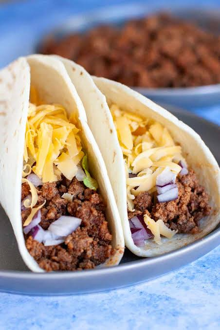

Home
Beff Tacos

Description
These street-style beef tacos combine deeply seasoned ground beef with warm, charred corn tortillas and crisp, vibrant garnishes.
The beef is browned and simmered with toasted ground spices and aromatics until tender, juicy, and fully infused with flavor.
Rather than being weighed down with heavy sauces, authentic tacos rely on simple, fresh contrasts:
finely diced white onion, fresh cilantro, crumbled cheese, and a squeeze of tart lime to cut through the richness of the meat.
Ingredients
- 500 g ground beef (80/20 blend)
- 8–10 small corn tortillas
- 1 small yellow onion, finely diced
- 2 cloves garlic, minced
- 1 tbsp chili powder
- 1 tsp ground cumin
- 1/2 tsp smoked paprika
- 1/2 tsp dried Mexican oregano
- Salt and freshly cracked black pepper to taste
- 60 ml beef broth or water
- 1 tbsp vegetable oil
- Toppings: finely diced white onion, fresh cilantro, lime wedges, crumbled cotija or queso fresco
Steps
- Heat the oil in a large skillet over medium-high heat. Add the diced yellow onion and cook for 3–4 minutes until soft and translucent,
then add the garlic and cook for 1 minute until fragrant.
- Add the ground beef, breaking it up with a wooden spoon. Cook until thoroughly browned, pouring off any excess grease if desired.
- Stir in the chili powder, cumin, smoked paprika, oregano, salt, and black pepper, toasting the spices with the meat for 1 minute.
- Pour in the beef broth or water, lower the heat to a simmer, and let the mixture cook uncovered for 5–7 minutes until the liquid reduces and forms a rich,
glossy coating around the beef.
- Warm the corn tortillas on a dry, hot griddle or skillet for 30–45 seconds per side until pliable and lightly charred around the edges.
- Double up the warm tortillas, spoon the seasoned beef into the center, and top with diced raw white onion, fresh cilantro, and crumbled cheese.
Serve immediately with fresh lime wedges on the side.